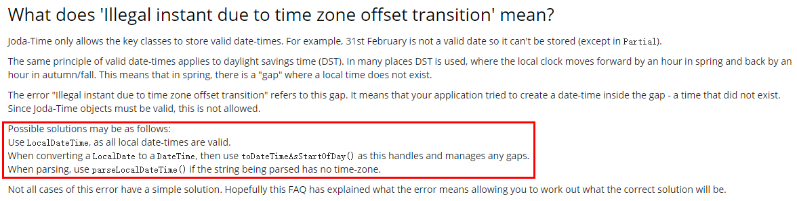
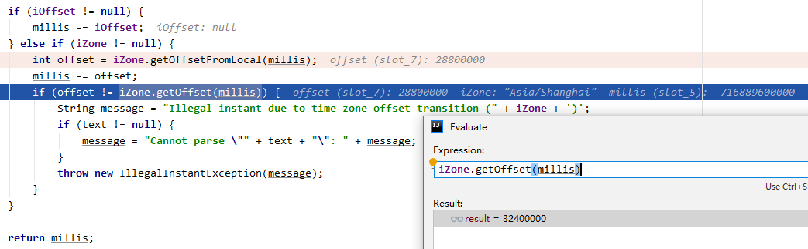
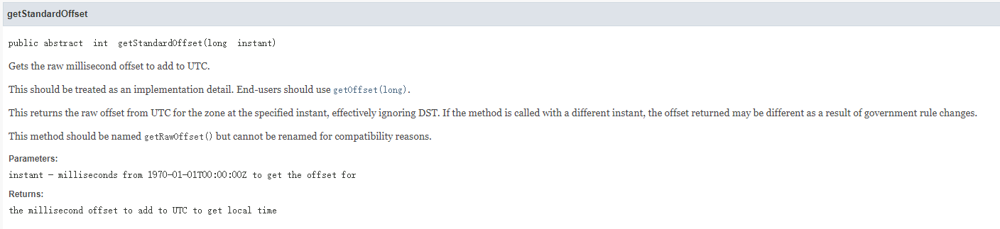
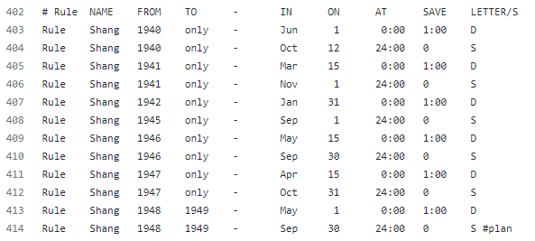

一个时区偏移转换导致的问题
最近线上遇到一个比较奇怪的问题，查下来还是挺有意思的，奇怪的知识又增加了。
起
线上服务有一个功能是从身份证号判断是否成年，具体做法是从身份证号截取出出生年月，然后判断是否大于18岁。功能比较简单，一直也没什么问题，直到昨天遇到一个日期解析的异常。
org.joda.time.IllegalInstantException: Cannot parse "19470415": Illegal instant due to time zone offset transition (Asia/Shanghai) |
19470415这个字符串格式正确，但用joda解析的时候就抛了异常。如下是解析的代码：
DateTime birthTime = DateTimeFormat.forPattern("yyyyMMdd").parseDateTime(birth); |
从异常信息上看，估计是和时区有关。网上搜索了下，在joda的文档中已经写明了如何解决：

把DateTime换成LocalDateTime后果然解决了。
LocalDateTime birthTime = DateTimeFormat.forPattern("yyyyMMdd").parseLocalDateTime(birth); |
解决后我开始尝试探究这背后的深层原因。
承
我尝试从1990年1月1日到今日，逐个尝试进行日期的解析，结果也很奇怪，只有几天会出现这种异常：
19400601 parse fail, Cannot parse "19400601": Illegal instant due to time zone offset transition (Asia/Shanghai) |
这几天到底有什么不一样，才会如此的特殊？这一切的背后到底是人性的扭曲，还是道德的沦丧？
异常抛出的位置在joda中DateTimeParserBucker类的computeMillis方法：
...... |
millis是根据日期字符串计算出的一个时间戳，iZone表示时区，不设置的话则用机器设置的时区，在上例中是Asia/Shanghai。getOffsetFromLocal方法返回的是一个偏移量，本地时间减去这个偏移量就可以得到UTC时间。getOffset方法返回的也是偏移量，UTC时间加上这个偏移量就可以得到一个本地时间。在上面joda的判断中，先调用getOffsetFromLocal从本地时间millis计算一个偏移量offset，millis减去offset后就是一个UTC时间；再调用getOffset从UTC时间计算出一个偏移量，正常来讲，这两个偏移量应该是一致的，如果不一致就会抛出异常。

在19470415这个例子中，getOffsetFromLocal计算结果是28800000毫秒，即8个小时；getOffset方法计算结果则是32400000毫秒，即9个小时。这1个小时又是从何而来？
转
看下getOffset方法的注释：

getOffset返回的偏移量可能由于夏令时或政策原因而不同！
继续翻看joda的代码，在org.joda.time.tz.src中包含了一组时区相关的代码，这是来自iana的时区数据内容。iana Time Zone Database可以在这里下载。
我们找到joda中asia的时区数据，代码地址。以Shanghai为关键字，搜索到这么一组数据：

这组日期看着有点眼熟啊，这不就是之前日期解析异常那组日期吗？
细看前面的注释，大概意思就是历史上因为采用过夏令时，或者战争等因素，导致某些历史上的某些时间段，Asia/Shanghai时间与UTC时间的时区间隔可能不同。这段注释很有意思，引用连接也能看到一些有意思的故事，比如1919年天津曾经短暂的施行过夏令时制度，给老百姓折腾的够呛，后来又改回来了。
iana的时区数据怎么读呢？详细规则可以参考这里。最后一列的D表示CDT，即夏令时；S表示CST，即标准时。大概猜测下这个数据的读法，以我们服务触发的异常例子1947年04月15日为例，在4月15日的0点0分，采用夏令时，时间调整为1点。于是，相较于UTC时间，多出了一个小时。
合
终于，我们知道这多的一个小时从何而来。知道真相的我，真的想骂街。
题外话：夏令时真是个绝绝子的发明，如果是为了节约能源，明明修改作息就能解决的事，改来改去搞的很多东西都错乱了。